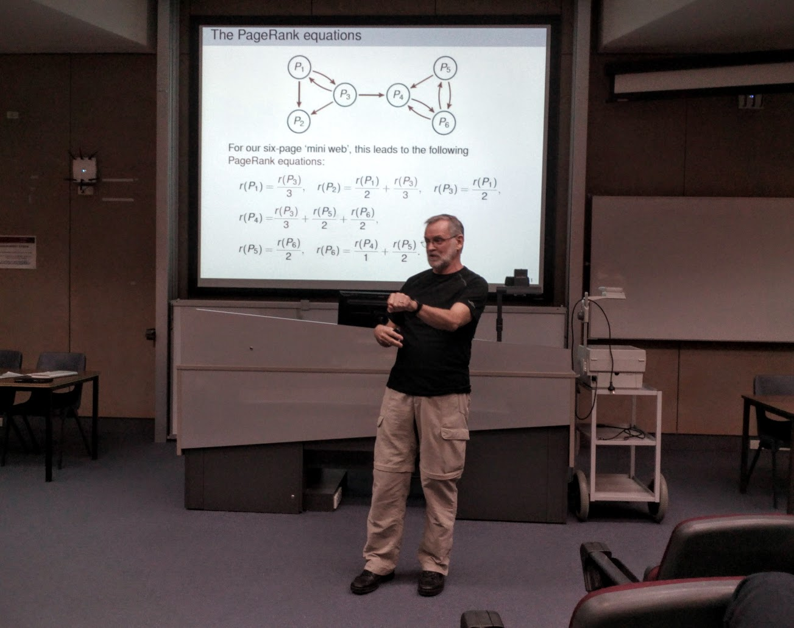

Last year an honours student noticed something missing in mathematics and statistics at La Trobe University. She saw that there was no society at the university to cultivate an interest in mathematics. There were no social events to help the undergraduate students get to know one another. And there was very little in the way of extracurricular lectures for students without several years of mathematical study already under their belt. So she started the Mathematics and Statistics Society at La Trobe University.
I was elected as the inaugural secretary of the society, and we formed an executive of four amongst a broader committee of nine. We were green. It’s not like we had formed a student society before, so we did our research and did the best we could. It turns out that there was a real demand for academic events in mathematics and statistics. One of the first seminars we hosted was given by Dr. Katherine Seaton, talking about the hyperbolic surfaces she crochets. The room was full!
I still can’t believe how successful these sorts of events can be. The algorithm for a good event is as follows:
The big takeaway here is that there are plenty of students out there who have an innate desire to learn about mathematics and statistics beyond what they learn for their degree. You just have to provide the opportunities and the biscuits, and they will come. That’s not to say that there isn’t a lot of organisation involved in finding speakers and setting up events. It’s just that you’re calling on an interest in mathematics and statistics that already exists in the student cohort.

Dr. Brian Davey talking about Google matrices
I myself ran a TeX tutorial, following feedback that undergraduate students want to learn about mathematical typesetting earlier in their degree. We also hosted movie nights, afternoon teas, end of semester celebrations. Giving students the opportunity to meet other students is a big deal.
The feedback from the orientation week stall that we hosted recently is that while social events are welcome, students are mostly interested in academic events. We handed out flyers to our first event this year - our department’s annual Pi Day celebration on March 14th. We signed up new members and encouraged them to join our Facebook group. I doubt the society will have any trouble at all continuing into 2016.
The new academic year has started, and this week we’ll be hosting our AGM and re-electing all the positions. I’m at the end of my PhD, so my year just isn’t predictable enough to justify putting my hand up again. But I’m grateful for the opportunity to have had a hand in establishing the society, and the response to the events has been astounding. Thank you to everyone on the committee for your part in putting everything together. Good luck to the incoming committee members, whoever you might be; you’ll be doing something very good for the students of La Trobe University.
devtools::session_info()## ─ Session info ───────────────────────────────────────────────────────────────
## setting value
## version R version 4.1.0 (2021-05-18)
## os macOS Big Sur 11.3
## system aarch64, darwin20
## ui X11
## language (EN)
## collate en_AU.UTF-8
## ctype en_AU.UTF-8
## tz Australia/Melbourne
## date 2021-05-30
##
## ─ Packages ───────────────────────────────────────────────────────────────────
## package * version date lib source
## blogdown 1.3 2021-04-14 [1] CRAN (R 4.1.0)
## bookdown 0.22 2021-04-22 [1] CRAN (R 4.1.0)
## bslib 0.2.5.1 2021-05-18 [1] CRAN (R 4.1.0)
## cachem 1.0.4 2021-02-13 [1] CRAN (R 4.1.0)
## callr 3.7.0 2021-04-20 [1] CRAN (R 4.1.0)
## cli 2.5.0 2021-04-26 [1] CRAN (R 4.1.0)
## crayon 1.4.1 2021-02-08 [1] CRAN (R 4.1.0)
## desc 1.3.0 2021-03-05 [1] CRAN (R 4.1.0)
## devtools 2.4.0 2021-04-07 [1] CRAN (R 4.1.0)
## digest 0.6.27 2020-10-24 [1] CRAN (R 4.1.0)
## ellipsis 0.3.2 2021-04-29 [1] CRAN (R 4.1.0)
## evaluate 0.14 2019-05-28 [1] CRAN (R 4.1.0)
## fastmap 1.1.0 2021-01-25 [1] CRAN (R 4.1.0)
## fs 1.5.0 2020-07-31 [1] CRAN (R 4.1.0)
## glue 1.4.2 2020-08-27 [1] CRAN (R 4.1.0)
## htmltools 0.5.1.1 2021-01-22 [1] CRAN (R 4.1.0)
## jquerylib 0.1.4 2021-04-26 [1] CRAN (R 4.1.0)
## jsonlite 1.7.2 2020-12-09 [1] CRAN (R 4.1.0)
## knitr 1.33 2021-04-24 [1] CRAN (R 4.1.0)
## lifecycle 1.0.0 2021-02-15 [1] CRAN (R 4.1.0)
## magrittr 2.0.1 2020-11-17 [1] CRAN (R 4.1.0)
## memoise 2.0.0 2021-01-26 [1] CRAN (R 4.1.0)
## pkgbuild 1.2.0 2020-12-15 [1] CRAN (R 4.1.0)
## pkgload 1.2.1 2021-04-06 [1] CRAN (R 4.1.0)
## prettyunits 1.1.1 2020-01-24 [1] CRAN (R 4.1.0)
## processx 3.5.2 2021-04-30 [1] CRAN (R 4.1.0)
## ps 1.6.0 2021-02-28 [1] CRAN (R 4.1.0)
## purrr 0.3.4 2020-04-17 [1] CRAN (R 4.1.0)
## R6 2.5.0 2020-10-28 [1] CRAN (R 4.1.0)
## remotes 2.3.0 2021-04-01 [1] CRAN (R 4.1.0)
## rlang 0.4.11 2021-04-30 [1] CRAN (R 4.1.0)
## rmarkdown 2.8 2021-05-07 [1] CRAN (R 4.1.0)
## rprojroot 2.0.2 2020-11-15 [1] CRAN (R 4.1.0)
## sass 0.4.0 2021-05-12 [1] CRAN (R 4.1.0)
## sessioninfo 1.1.1 2018-11-05 [1] CRAN (R 4.1.0)
## stringi 1.6.1 2021-05-10 [1] CRAN (R 4.1.0)
## stringr 1.4.0 2019-02-10 [1] CRAN (R 4.1.0)
## testthat 3.0.2 2021-02-14 [1] CRAN (R 4.1.0)
## usethis 2.0.1 2021-02-10 [1] CRAN (R 4.1.0)
## withr 2.4.2 2021-04-18 [1] CRAN (R 4.1.0)
## xfun 0.22 2021-03-11 [1] CRAN (R 4.1.0)
## yaml 2.2.1 2020-02-01 [1] CRAN (R 4.1.0)
##
## [1] /Library/Frameworks/R.framework/Versions/4.1-arm64/Resources/library